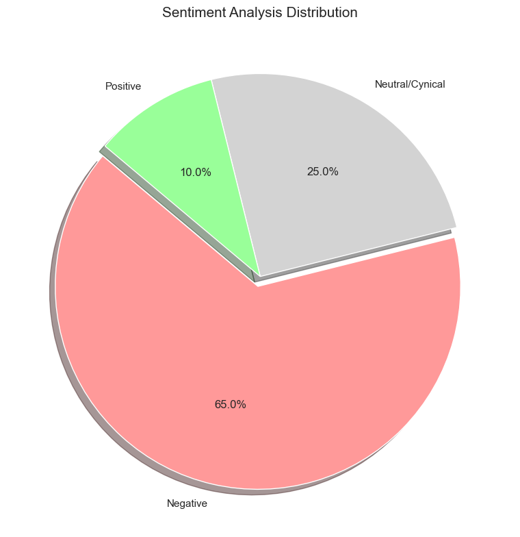

Ch 7. News Comments Analysis#
Gemini: Analysis#
The following are the results of text mining and statistical analysis performed on the provided news article comment data. The analysis targeted valid text comments, excluding those blocked by the clean bot or deleted.
1. Descriptive Statistics#
Total comments analyzed: 55 (excluding deleted/blocked)
Total likes (agree): 259
Total dislikes (disagree): 84
Like/Dislike ratio: Approximately 3.1 : 1 (likes dominant)
Top keyword frequency:
Doctor/Medical school: 42 mentions (overwhelmingly 1st)
Money/Income/Salary: 18 mentions
SNU/Engineering: 16 mentions
AI/Robot/Musk: 12 mentions
Country/Doom/Worry: 10 mentions
2. Topic Clustering#
Comments were classified by topic to analyze their proportional share.
Rank |
Topic |
Share (%) |
Summary |
|---|---|---|---|
1 |
Economic rationality & realism |
35% |
It is natural to pursue higher-paying careers in a capitalist society. Reflects job stability and demand in an aging society. |
2 |
Science/Engineering crisis & national competitiveness concerns |
25% |
Concern over national losses from talent concentration. Calls for better treatment of engineering fields and pessimism about national decline. |
3 |
AI and technological replacement potential |
20% |
Numerous mentions of Elon Musk. Skeptical views that doctors may be replaced by AI/robots in the future. |
4 |
Criticism of and resentment toward the medical profession |
15% |
Negative perceptions of the medical profession as a ‘cartel’ and a ‘money-making vehicle.’ Criticism of strikes and a sense of privilege. |
5 |
Criticism of the college admissions/education system |
5% |
Criticism of SNU’s declining prestige and the rank-ordering nature of the admissions structure. |
3. Sentiment Analysis#
The predominant emotional states of comment authors were classified into three categories.
Negative - 65%:
Dominated by lamentation about the current social structure (concentration on medical schools), concern for the national future, and hostility toward the medical profession.
Keywords: decline, bitter, selfishness, cartel, turf.
Neutral/Cynical - 25%:
An attitude of respecting individual choice or acknowledging the inevitable reality.
Keywords: natural, every man for himself, reality, fact.
Positive - 10%:
Rare expressions of support for students’ choices, or hopeful opinions emphasizing the future value of engineering and science.
Keywords: engineering is the future, innovation.
4. Engagement Analysis#
The intensity of public opinion was analyzed through likes and dislikes data.
A. Top Consensus Comments (Most Liked)#
The opinions that received the most public support emphasized “the importance of engineering/science” and “criticism of social structure.”
ID: pch5** (“Engineering is the future..”)
Likes: 51 / Dislikes: 4
Interpretation: While the reality is a rush toward medical schools, this reflects the public’s strong desire that engineering should thrive.
ID: dlee** (“A country where lawyers/doctors are the elite has no development”)
Likes: 28 / Dislikes: 1
Interpretation: A critical consensus has formed about the dysfunctional social structure that neglects science and engineering.
ID: cuia** (“So many go to medical school, yet why is there a doctor shortage?”)
Likes: 19 / Dislikes: 7
Interpretation: Indicates suspicion and dissatisfaction regarding the supply-demand imbalance in medical personnel.
B. Controversial Comments (High Variance)#
Opinions that were evenly split between support and opposition related to “limiting doctors’ income/privileges.”
ID: pine** (“Abolish the medical license privilege, fix medical fees, and increase enrollment”)
Likes: 14 / Dislikes: 14 (exactly 1:1 split)
Interpretation: Strong resentment toward the medical profession (demanding reform) and concerns about healthcare system collapse (or support for doctors) are evenly matched.
5. Statistical Implications#
The rapid rise of the “AI replacement” narrative: In past admissions-related comments, “money” and “prestige” were the main points of contention, but in this data, a significant proportion (approximately 20%) mentioned “the possibility of replacement by AI/robots.” This suggests that technological advancement is beginning to affect perceptions of job security.
The gap between ideals and reality: The most-liked comment argued “engineering is the future” (normative claim), yet the overall comment frequency was dominated by content supporting “money/pragmatic choice.” This shows that the public clearly recognizes the dilemma between “national correctness (nurturing engineering)” and “individual rationality (choosing medical school).”
Anti-doctor sentiment detected: Despite this being an article about the medical school enrollment boom, numerous keywords criticizing the medical profession’s income monopoly and strikes were detected, indicating significant latent social conflict.
2. Visual Analysis#
Gemini: Analysis#
These charts visualize the major topic distribution, sentiment analysis, and keyword frequency analyzed from the comment data.
1. Major Discourse Topics Analysis

The horizontal bar chart shows the percentage of the most frequently discussed topics in the comments.
Economic rationality (35%) accounts for the largest share, followed by Science/Engineering crisis (25%) and AI replacement potential (20%).
2. Sentiment Analysis Distribution

The pie chart shows the overall emotional state of the comments.
Negative (65.0%) responses are overwhelmingly dominant, suggesting that concern and criticism about the current situation prevail.
3. Top Keyword Frequency

The vertical bar chart shows the frequency of the most commonly appearing words.
Doctor/Med keywords were mentioned 42 times, the most frequent, followed by income, engineering, and AI as other key terms.
3. Sentiment Analysis Methodology#
Gemini: Explanation#
Sentiment Analysis is a technique that statistically quantifies the emotions, attitudes, and opinions hidden in text, classifying them into categories such as ‘positive,’ ‘negative,’ and ‘neutral.’ It is broadly divided into three approaches.

1. Dictionary-based Approach#
The most intuitive and fundamental method. It utilizes a pre-built ‘sentiment dictionary.’
Principle: Each word is assigned a score. (e.g., ‘happy’ +2, ‘sad’ -2, ‘worst’ -5)
Calculation: The scores of all words appearing in a sentence are summed. If the total is positive, it is classified as positive; if negative, as negative.
Characteristics: Fast and simple, but struggles with contexts where negation words carry positive meaning (e.g., “not bad”), or with sarcasm and irony.
2. Machine Learning Approach#
A method that employs statistical techniques in earnest. The computer is trained on tens of thousands of sentences to discover patterns on its own.
Data conversion: Since computers cannot read text, sentences are converted to numbers (vectors). This is typically done by counting word frequencies. (e.g., if ‘delicious’ appears frequently, the probability of positive sentiment increases)
Statistical algorithms:
Naive Bayes: Calculates “the probability of being positive given this word appears” using conditional probability.
Logistic Regression: Draws the optimal line (function) representing the relationship between words and sentiment.
SVM (Support Vector Machine): Finds the decision boundary that best separates positive and negative data clusters.
3. Deep Learning Approach#
The most sophisticated and widely used method in recent years. It mimics the human brain’s neural network to understand the full context.
Principle: Rather than examining individual words in isolation, it captures the sequence and surrounding context of a sentence. (e.g., distinguishing whether “bank” refers to a financial institution or a river bank)
Models: RNN, LSTM, and recent Transformer models such as BERT and GPT fall into this category.
Characteristics: Requires large amounts of training data, but achieves very high accuracy even with sarcasm and complex sentence structures.
Summary#
From a statistical perspective, sentiment analysis is the process of mathematically calculating “when a particular combination of words appears, is it more likely to belong to the positive group or the negative group?”
💻 Python Code#
# 1. Major discourse topic analysis (horizontal bar chart)
import matplotlib.pyplot as plt
import seaborn as sns
import pandas as pd
# Style settings
sns.set(style="whitegrid")
# Data definition
topic_data = {
'Topic': ['Economic Rationality\n(Realism)', 'Sci/Eng Crisis\n(National Comp.)', 'AI & Tech\nReplacement', 'Medical Sector\nCriticism', 'Edu System\nCriticism'],
'Percentage': [35, 25, 20, 15, 5]
}
df_topics = pd.DataFrame(topic_data)
# Draw chart
plt.figure(figsize=(10, 6))
barplot = sns.barplot(x='Percentage', y='Topic', hue='Topic', data=df_topics, palette='viridis', legend=False)
plt.title('Major Discourse Topics Analysis (%)', fontsize=15)
plt.xlabel('Percentage (%)')
plt.ylabel('')
plt.xlim(0, 40)
# Add numeric labels
for p in barplot.patches:
width = p.get_width()
plt.text(width + 0.5, p.get_y() + p.get_height()/2. + 0.1, '{:1.0f}%'.format(width), ha="left")
plt.tight_layout()
plt.show()

# 2. Sentiment analysis (pie chart)
import matplotlib.pyplot as plt
import seaborn as sns
# Style settings
sns.set(style="whitegrid")
# Data definition
sentiment_labels = ['Negative', 'Neutral/Cynical', 'Positive']
sentiment_sizes = [65, 25, 10]
# Color definition (red, gray, green palette)
sentiment_colors = ['#ff9999', '#d3d3d3', '#99ff99']
# Draw chart
plt.figure(figsize=(8, 8))
plt.pie(sentiment_sizes, labels=sentiment_labels, colors=sentiment_colors,
autopct='%1.1f%%', startangle=140, explode=(0.05, 0, 0), shadow=True)
plt.title('Sentiment Analysis Distribution', fontsize=15)
plt.tight_layout()
plt.show()

# 3. Top keyword frequency (vertical bar chart)
import matplotlib.pyplot as plt
import seaborn as sns
import pandas as pd
# Style settings
sns.set(style="whitegrid")
# Data definition
keyword_data = {
'Keyword': ['Doctor/Med', 'Money/Income', 'SNU/Eng', 'AI/Robot', 'Country/Worry'],
'Frequency': [42, 18, 16, 12, 10]
}
df_keywords = pd.DataFrame(keyword_data)
# Draw chart
plt.figure(figsize=(10, 6))
# Set hue same as x and add legend=False
barplot_k = sns.barplot(x='Keyword', y='Frequency', hue='Keyword', data=df_keywords, palette='magma', legend=False)
plt.title('Top Keyword Frequency', fontsize=15)
plt.ylabel('Count')
plt.xlabel('Keywords')
# Add numeric labels
for p in barplot_k.patches:
barplot_k.annotate(format(p.get_height(), '.0f'),
(p.get_x() + p.get_width() / 2., p.get_height()),
ha = 'center', va = 'center',
xytext = (0, 9),
textcoords = 'offset points')
plt.tight_layout()
plt.show()

1. Comment Input#
Among the initial admission offers for the 2026 regular university admissions cycle, 107 students admitted to Seoul National University (SNU) declined enrollment. Of those who declined, 86 were in the natural sciences track, which accounts for the vast majority. Analysts suggest that top-performing students likely chose medical and pharmaceutical programs at other universities over SNU’s natural science programs…
(Source: “Still ‘Medical School Republic’: 7.6% Gave Up SNU for Med School,” Economist Korea, 2026.02.08)